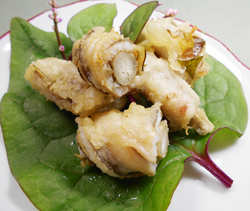

ゴボウの穴子巻き揚げ
- 調理時間：30分
- （一人当たり）
- カロリー：355kcal
- たんぱく質：15.1g
- 脂質：22.5g
- 炭水化物：20.8g
- 塩分：0.8g


＜2人分＞
- アナゴ（ひらいたもの）
- 2尾分
- 料理酒
- 小さじ1
- ゴボウ
- 1/2本
- 塩、コショウ
- 各少々
- 大葉
- 6枚
- 梅肉
- 15g
- 片栗粉
- 大さじ2～3
- 揚げ油
- 適量


- アナゴは縦半分に切り、酒をふる。
- ゴボウは縦に十字に切り、ラップで包んで６００Wのレンジで２～３分かける。
- アナゴに梅肉を塗り、大葉を広げる。ゴボウを芯にアナゴを巻き、片栗粉をまぶす。
- フライパンに油を入れて熱し、③を入れて中火で転がしながら揚げる。
焼き色がついたら取り出し、食べやすい大きさに切り分けて完成。
ゴボウの穴子巻き揚げ
夏が旬のアナゴは脂質が少なく、さっぱりと食べられるのが特徴です。ちなみにウナギの旬は、脂質の多い秋から冬にかけて。アナゴとウナギ。見た目はよく似ていますが、生息場所も栄養価も異なります。栄養成分を比較すると、エネルギー、脂質、ビタミンAはウナギが高く、アナゴの方が低いです。たんぱく質、カリウム、マグネシウム、鉄分等はアナゴが高く、ウナギの方が低いです。双方、近しい栄養ですが、少しだけ異なりますので特徴を理解して、用途を選べるといいですね。ウナギに比べてお手頃な値段で手に入るアナゴ。レパートリーを増やし体力を養いましょう。